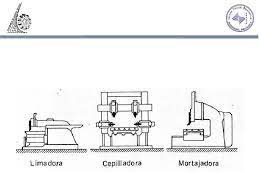
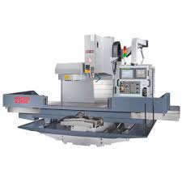
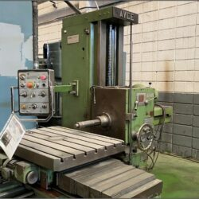
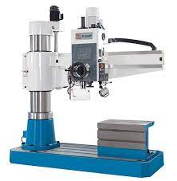

Conoce las funciones, competencias y posibles salidas laborales
Es la persona encargada de poner a punto la maquinaria que fabrica piezas. Trabaja en un taller mecanizando superficies cilíndricas, cónicas, roscas y más, con máquinas tradicionales y CNC.
Al manipular máquinas fresadoras, se deben cumplir normas de seguridad y prevención de riesgos, ya que las piezas están en movimiento y pueden producirse contactos impredecibles.
Los operarios deben usar ropa adecuada, pelo recogido si es largo, mantener el área limpia y bien iluminada.

Operador de máquina cepilladora-limadora

Operador de máquina fresadora CNC

Operador de máquina mandrinadora
Operador de máquina rectificadora

Operador de máquina taladradora